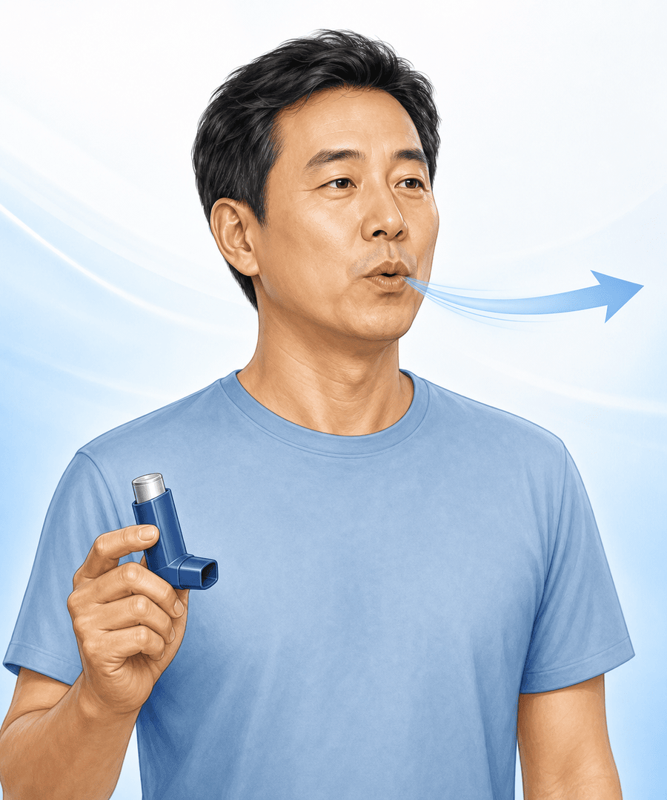

1
흔들기 Shake
사용 전 5초간 위아래로 잘 흔듭니다. 첫 사용·7일 이상 미사용·떨어뜨린 경우엔 허공에 시험분사 2회.
2

숨 내쉬기 Breathe Out
흡입기를 입에서 뗀 채, 숨을 편안하게 끝까지 내쉽니다. 흡입기에 대고 내쉬지 않습니다.
3
흡입 + 분사 Inhale & Actuate
흡입구를 입에 물고 천천히 깊게 들이쉬며 캔을 1번 누르고, 그대로 계속 들이쉽니다.
4
숨 참기 Hold Breath
흡입기를 빼고 10초간(가능한 만큼) 숨을 참았다가 천천히 내쉽니다.
5
★ 가장 중요
입 헹구기 Rinse
사용 후 물로 입을 헹구고 뱉습니다. 구강 칸디다(아구창)·목 쉼을 예방합니다.
6
청소 Clean
흡입구는 마른 휴지로만 닦습니다 (주 1회). 물 세척 금지 — 젖으면 분사량이 달라집니다.